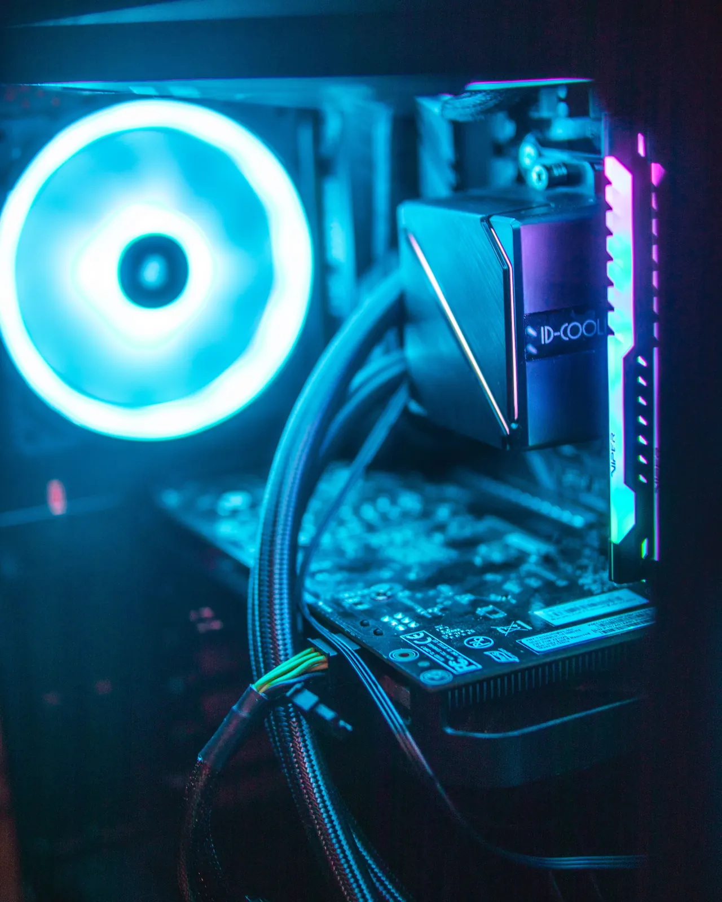

Your PC should feel as fast as the hardware inside it.
Slow startup? Stutters? Performance drops under load? We measure what the system is doing before changing settings or recommending hardware.

What feels slow?
Pick the closest match. Signal Scan will carry this context forward.
Startup apps, background services, storage health and Windows configuration can all drag out boot time.
Carry this into Signal Scan →Find the thing that’s actually slowing it down.
Performance problems are usually a mix of software, heat, storage or hardware limits. We separate them instead of applying random “boost” settings.
Apps, services and Windows tasks that keep using resources when they don’t need to.
Drive health, free space, SSD/NVMe behaviour and storage bottlenecks that make the whole system feel slow.
CPU and GPU temperatures, throttling, airflow and cooling problems that reduce sustained performance.
Drivers, power settings, background load and sensible configuration changes for smoother real-world performance.
A clear path from symptom to next step.
We look at startup load, temperatures, storage, drivers and system behaviour.
We change what actually matters instead of stacking one-click tweaks.
Where useful, we compare benchmarks, temperatures or responsiveness before and after.
No magic boost buttons.
We fix the cause, not just the feeling.
A slow PC might need a simple cleanup, better cooling, healthier storage or an upgrade. We’ll tell you which one makes sense instead of pretending every system needs new parts.
Based in northern Pretoria
VoltTech serves Wonderboom, Pretoria North, Sinoville, Annlin, Montana and surrounding areas. Remote help may suit some software or creator-tech work. Courier-in work is available only for eligible jobs by prior arrangement; packing, courier method and any charges are confirmed before equipment is sent.
Common questions
Will optimisation make an old PC fast?
Sometimes. If the problem is software, thermals or storage, the difference can be noticeable. If the hardware is simply too limited, we’ll tell you that instead.
Do you overclock PCs?
Stability comes first. Any tuning should stay within what the hardware, cooling and power delivery can safely handle.
Can you improve gaming performance?
Yes, when the cause is something we can actually fix: heat, drivers, storage, background load, configuration or a sensible upgrade.
Not sure what’s slowing it down?
Run Signal Scan for a useful starting point, or send us what you’re noticing.